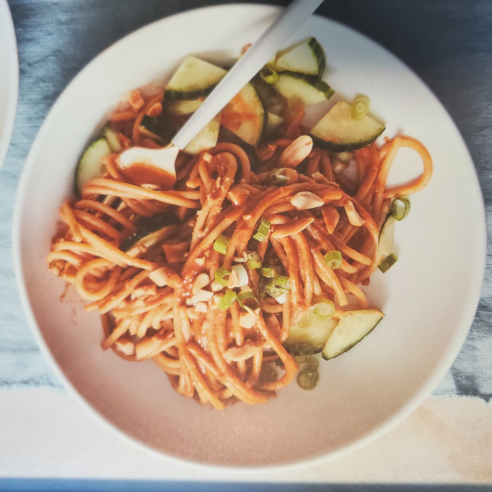

Cold Peanut Noodles

Description
Great for mealprep. These noodles only take 10 minutes to make and pack a ton of flavour and can be eaten warm or cold. Taken from Jessica Seinfeld's cookbook: VEGAN, at Times.
Ingredients
- 1 lb spaghetti noodles (I substitue chickpea pasta)
- 1/4 cup tamari or soy sauce
- 1/4 peanut butter
- 2 tbsp toasted sesame oil
- 1 tbsp Sriracha
- 1 tbsp brown sugar
- 1 tbsp grated, peeled fresh ginger (or sub 1 tsp ground ginger)
- pinch of salt, to taste
- 1 cucumber
- 3 scallions, thinly sliced
- 1/3 cup chopped roasted, salted peanuts
Preparation
- Cook the noodles according to the package directions then drain and rinse under cold water.
- In a large bowl, whisk together the tamari, peanut butter, vinegar, sesame oil, Sriracha, brown sugar, ginger, and salt.
- Toss the noodles thoroughly in the sauce mix.
- Quarter the cucumber lengthwise, then slice it crosswise into small pieces.
- Divide the noodles among bowls and top with cucumber, scallions, peanuts, and extra Sriracha if you want more heat.